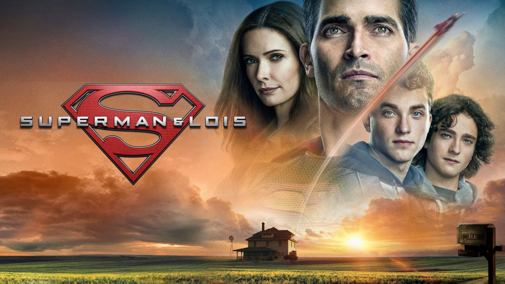
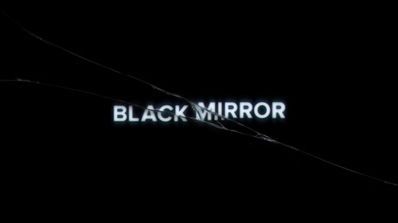
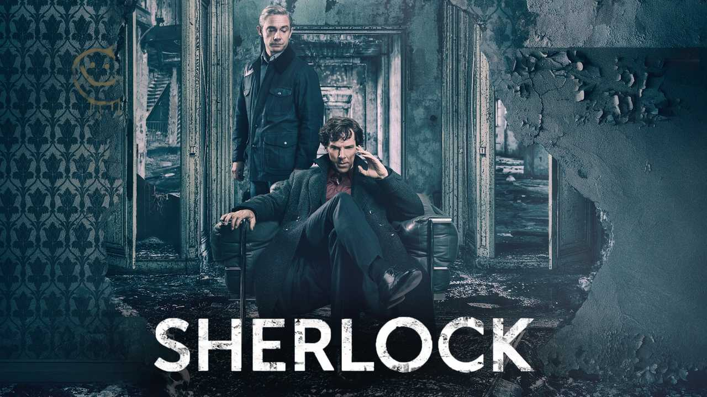

 Além de manterem um emprego não lucrativo, Clark e Lois criam dois filhos, Jonathan (Jordan Elsass) e Jordan (Alexander Garfin), que começam a lhes causar dor de cabeça justamente pela possibilidade de terem herdado os poderes do pai.
 Situada nos continentes fictícios de Westeros e Essos, a série centra-se no Trono de Ferro dos Sete Reinos e segue um enredo de alianças e conflitos entre as famílias nobres dinásticas, seja competindo para reivindicar o trono ou lutando por sua independência.
Situada nos continentes fictícios de Westeros e Essos, a série centra-se no Trono de Ferro dos Sete Reinos e segue um enredo de alianças e conflitos entre as famílias nobres dinásticas, seja competindo para reivindicar o trono ou lutando por sua independência.
 Black Mirror é uma série de televisão britânica de ficção científica criada por Charlie B., centrada em temas obscuros e satíricos que examinam a sociedade moderna, abordando as consequências imprevistas das novas tecnologias. Os episódios são autônomos, geralmente se passam em um presente alternativo ou em um futuro próximo
 Sherlock Holmes retrata um "detetive consultor" que auxilia a Polícia Metropolitana de Londres na resolução de vários crimes. Embora a série descreve uma variedade de crimes e criminosos, o conflito de Holmes com seu nêmesis Jim Moriarty (Andrew Scott) é um recurso recorrente.